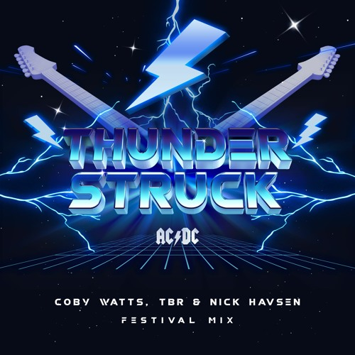
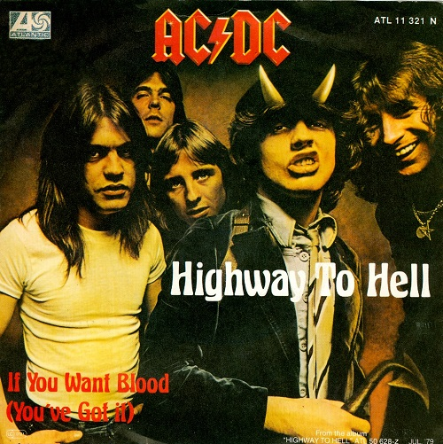

|  |
The song is about a celebration and having a good time, as it's often the case with most hard rock songs. Thunderstruck, however, specifically refers to the act of frightening a person out of the blue... in a good way. In other words, it's more of a pleasant surprise. |
|  |
The Australian rock band AC/DC made history with their guitar riffs, melodies and lyrics in their best performing single “Highway to Hell” released in 1979. 40 years after the release, this song still gets people revved up and screaming and jumping during the concerts. Those are the signs of an evergreen track. |